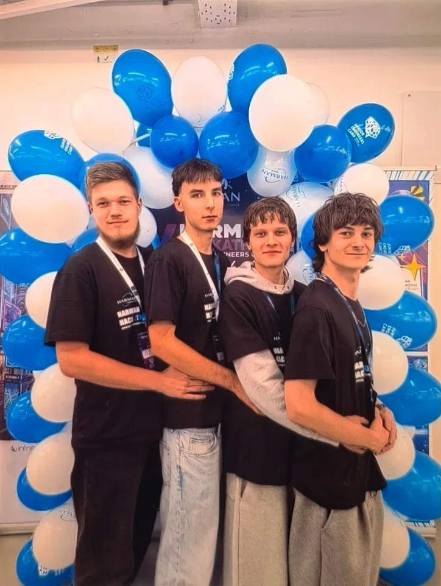

Vásárlóknak
Nem kell átöltözni, és nem kell sorban állni.
Felépítés
A tükör egy álló 24 colos monitor. Minden más a tetejére kerül, egy 3D nyomtatott tartóba.
Mérés
A kamera lát, a szenzor méri, milyen messze állsz. Így lesz a pixelből centiméter.
Belül
A kijelző hátán ül, egy hűtőborda hűti. Nincs szerver, nincs felhő.
Vezérlés
Ruhát választasz, elindítod a mérést, és a visszaszámlálás alatt a lábnyomokra állsz.

G-niuszok

Infrastruktúra-felelős

3D tervező

Beágyazott rendszerek & Raspberry Pi specialista

Szoftverfejlesztés
Köszönjük a figyelmet!
Próbáld fel, anélkül, hogy felpróbálnád./p>